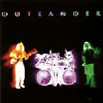

| Artist: | Outlander |
| Title: | Outlander |
| Label: | independent |
| Length(s): | 58 minutes |
| Year(s) of release: | 2001 |
| Month of review: | [08/2002] |
| 1) | Down | 5.08 |
| 2) | Wood | 3.45 |
| 3) | Leaving The Desert Behind | 4.38 |
| 4) | Nothing Seems Right | 3.14 |
| 5) | Living In The Cracks | 3.55 |
| 6) | Thorn | 3.34 |
| 7) | Reprise | 1.29 |
| 8) | Worlds Away | 5.10 |
| 9) | II | 3.03 |
| 10) | Once | 2.56 |
| 11) | Guilt | 5.18 |
| 12) | Transformation | 5.26 |
| 13) | Now | 5.47 |
| 14) | Planetwalker | 4.49 |
Wood starts a little more peaceful, to quickly shift up and return the strength mentioned before. Chris's vocals are somewhat reminiscent of Soundgarden's Chris Cornell, exactly bringing the strength the material needs.
Leaving The Desert Behind is more guitar based than the previous tracks, but the progressive feel remains
Nothing Seems Right starts more of a classic rock track, a little too straight forward for my tastes. But then suddenly the Rush-like intermezzo changes everything, even leading to some nice keys. The closing is like the beginning, though.
Living In The Cracks is a gentle ballad, somewhat tacky, but for the cello. The track picks up some momentum along the way, making it into a rather nice rock ballad.
Thorn is your basic alternative track, as you would expect from Alice in Chains or Stone Temple Pilots. Not bad, but it's been done before. Reprise is a guitarry follow up to the fade out of Thorn. If it weren't for the fact that it is a vocal track, it would have seemed an intermezzo. Niceish.
Worlds Away starts a slower track without being a ballad. As it progresses it turns out a blend of Rush and Soundgarden elements: The echo of Cornell's voice remains, whilst the intermezzo-like elements are so well known of the Rush we've known for the last twenty years.
II is pretty rocky, and too close to Soundgarden for comfort. I don't much like the guitar sound they use in this one.
Once is a mid tempo track, incorporating a flute, making for a nice change.
Guilt starts somewhat grave, with sombre sounding keys, but rather atmospheric. This one has a nice build up, to a strong track, that doesn't remind me of something else (although Chris' voice keeps reminding me of the other Chris).
Transformation is a track with a disproportionally long intro. Pretty okay, with a bit of rock, a bit of ballad, a bit of melody and a lot of Soundgarden.
Now is a pretty spiky track, taking no prisoners. Pretty rocky, a little riffy
Planetwalker is based on Rush' Tom Sawyer. I'll stick with the original.
The band can be found at www.outlander1.com